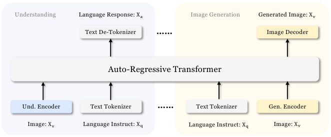
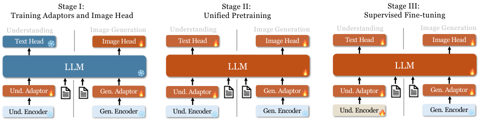

Janus：分开视觉编码，统一理解与图像生成¶
💡 Janus 为看图理解和图像生成保留不同的视觉表示，再让同一个自回归 Transformer 同时预测文字与离散图像 token，减轻两类任务的表示冲突。
理解图像通常需要语义抽象，生成图像却需要保留可重建的空间与纹理细节。早期统一模型常用同一视觉 tokenizer 同时承担两件事，使理解能力为图像重建目标让步。Janus 的核心不是拆成两个独立大模型，而是拆开视觉编码路径，保留共享语言模型。它用 SigLIP 处理理解输入，用 VQ 编码器提供生成目标，并通过三阶段混合训练让一个 1.3B Transformer 学会两种任务。论文既比较公开理解与生成基准，也设计了共享 tokenizer、语义增强 tokenizer、独立任务模型等对照，解释表示分离究竟解决了什么。
架构与序列形式¶

理解路径为 image→SigLIP→理解 adaptor→LLM→文字预测头。生成路径将训练图像经 VQ tokenizer 编成离散码本索引，再经生成 adaptor 输入 LLM，由独立图像预测头预测下一视觉 token。文本保留原 LLM tokenizer 与 embedding。
理解侧使用 SigLIP-Large-Patch16-384；生成码本大小 16,384、下采样率 16。在 \(384\times384\) 分辨率下，一张图被表示成 \(24\times24=576\) 个图像 token。两个 adaptor 都是两层 MLP。
共享的是 Transformer 的序列建模能力，不是输入视觉编码器和输出 head。模型没有在 LLM 外调用另一个完整扩散模型代替生成；也不需要为两类任务设计不同的注意力 mask，均使用因果自回归。
目标函数与生成¶
统一形式是 next-token prediction：
纯文本与视觉理解仅在回答文字上计算 loss；文生图仅在图像 token 上计算。没有给各任务额外设计不同 loss 权重，但数据采样比例仍决定训练中的任务权重。
生成逐 token 采样，并采用 classifier-free guidance：
\(\ell_c/\ell_u\) 是有文本条件/无文本条件的 logits，最后通过 VQ decoder 重建图像。这里 guidance 调整的是离散 token 分布，不是连续扩散速度场。
三阶段训练与数据组织¶

第一阶段冻结视觉编码器与 LLM，只更新两个 adaptor 和图像 head，使用约 125 万图像描述与 120 万 ImageNet 样本。类别名→图像的简单任务用于先建立像素依赖。
第二阶段解冻 LLM，混合纯文本、理解与生成。理解数据包括交错图文、描述、图表；生成使用图文配对和约 200 万内部数据，并按美学与尺寸过滤部分图像。前 120k steps 使用 ImageNet，后 60k 转向开放域文本—图像；约 25% caption 只取首句，补充短提示能力。
第三阶段做混合指令微调，更新除生成编码器外的模块，包括理解编码器。只监督 assistant 回复，屏蔽 system/user。理解、文本和生成在同一个模型中共同训练，不分别产出两个任务模型。
| Hyperparameters | Stage 1 | Stage 2 | Stage 3 |
|---|---|---|---|
| Learning rate | \(1.0\times 10^{-3}\) | \(1\times 10^{-4}\) | \(2.0\times 10^{-5}\) |
| LR scheduler | Cosine | Constant | Constant |
| Weight decay | \(0.0\) | \(0.0\) | \(0.1\) |
| Gradient clip | \(1.0\) | \(1.0\) | \(1.0\) |
| Optimizer | AdamW ( \(\beta_{1}=0.9,\beta_{2}=0.95\) ) | AdamW ( \(\beta_{1}=0.9,\beta_{2}=0.95\) ) | AdamW ( \(\beta_{1}=0.9,\beta_{2}=0.95\) ) |
| Warm-up steps | \(300\) | \(5,000\) | \(0\) |
| Training steps | \(10,000\) | \(180,000\) | \(24,000\) |
| Batch size | \(256\) | \(512\) | \(256\) |
| Data Ratio | \(1:0:1\) | \(2:3:5\) | \(7:3:10\) |
Data Ratio 按“多模态理解:纯文本:图像生成”排列。SFT 的 7:3:10 意味着生成占一半，不是把数字分别当成百分数。整体训练使用 packing，长度 4096，16 个八卡 A100-40G 节点约七天。
理解与生成结果¶
| Type | Model | # LLM Params | POPE \(\uparrow\) | MME-P \(\uparrow\) | MMB \(\uparrow\) | SEED \(\uparrow\) | VQAv2 (test) \(\uparrow\) | GQA \(\uparrow\) | MMMU \(\uparrow\) | MM-Vet \(\uparrow\) |
|---|---|---|---|---|---|---|---|---|---|---|
| Und. Only | LLaVA-v \(1.5\) -Phi- \(1.5\) [ 86 ] | \(1.3\) B | \(84.1\) | \(1128.0\) | - | - | \(75.3\) | \(56.5\) | \(30.7\) | - |
| MobileVLM [ 14 ] | \(1.4\) B | \(84.5\) | \(1196.2\) | \(53.2\) | - | - | \(56.1\) | - | - | |
| MobileVLM-V2 [ 15 ] | \(1.4\) B | \(84.3\) | \(1302.8\) | \(57.7\) | - | - | \(59.3\) | - | - | |
| MobileVLM [ 14 ] | \(2.7\) B | \(84.9\) | \(1288.9\) | \(59.6\) | - | - | \(59.0\) | - | - | |
| MobileVLM-V2 [ 15 ] | \(2.7\) B | \(84.7\) | \(1440.5\) | \(63.2\) | - | - | \(61.1\) | - | - | |
| LLaVA-Phi [ 96 ] | \(2.7\) B | \(85.0\) | \(1335.1\) | \(59.8\) | - | \(71.4\) | - | - | \(28.9\) | |
| LLaVA [ 51 ] | \(7\) B | \(76.3\) | \(809.6\) | \(38.7\) | \(33.5\) | - | - | - | \(25.5\) | |
| LLaVA-v \(1.5\) [ 50 ] | \(7\) B | \(85.9\) | \(1510.7\) | \(64.3\) | \(58.6\) | \(78.5\) | \(62.0\) | \(35.4\) | \(31.1\) | |
| InstructBLIP [ 16 ] | \(7\) B | - | - | \(36.0\) | \(53.4\) | - | \(49.2\) | - | \(26.2\) | |
| Qwen-VL-Chat [ 3 ] | \(7\) B | - | \(1487.5\) | \(60.6\) | \(58.2\) | \(78.2\) | \(57.5\) | - | - | |
| IDEFICS- \(9\) B [ 41 ] | \(8\) B | - | - | \(48.2\) | - | \(50.9\) | \(38.4\) | - | - | |
| Emu \(3\) -Chat [ 83 ] | \(8\) B | \(85.2\) | - | \(58.5\) | \(68.2\) | \(75.1\) | \(60.3\) | \(31.6\) | - | |
| InstructBLIP [ 16 ] | \(13\) B | \(78.9\) | \(1212.8\) | - | - | - | \(49.5\) | - | \(25.6\) | |
| Und. and Gen. | DreamLLM † [ 21 ] | \(7\) B | - | - | - | - | \(72.9\) | - | - | \(36.6\) |
| LaVIT † [ 36 ] | \(7\) B | - | - | - | - | \(66.0\) | \(46.8\) | - | - | |
| Emu † [ 75 ] | \(13\) B | - | - | - | - | \(52.0\) | - | - | - | |
| NExT-GPT † [ 84 ] | \(13\) B | - | - | - | - | \(66.7\) | - | - | - | |
| Show-o [ 86 ] | \(1.3\) B | \(73.8\) | \(948.4\) | - | - | \(59.3\) | \(48.7\) | \(25.1\) | - | |
| Gemini-Nano-1 [ 78 ] | \(1.8\) B | - | - | - | - | \(62.7\) | - | \(26.3\) | - | |
| LWM [ 52 ] | \(7\) B | \(75.2\) | - | - | - | \(55.8\) | \(44.8\) | - | \(9.6\) | |
| VILA-U [ 85 ] | \(7\) B | \(85.8\) | \(1401.8\) | - | \(59.0\) | \(79.4\) | \(60.8\) | - | \(33.5\) | |
| Chameleon [ 77 ] | \(7\) B | - | - | - | - | - | - | \(22.4\) | \(8.3\) | |
| Janus (Ours) | \(1.3\) B | \(87.0\) | \(1338.0\) | \(69.4\) | \(63.7\) | \(77.3\) | \(59.1\) | \(30.5\) | \(34.3\) |
Janus 的 MMBench 为 69.4、SEED 为 63.7、POPE 为 87.0，MMMU 为 30.5；这些指标反映不同能力，不能从其中一个优势推出复杂视觉推理全面领先。部分更大的单任务模型仍有优势。
| Type | Method | # Params | Single Obj. | Two Obj. | Counting | Colors | Position | Color Attri. | Overall \(\uparrow\) |
|---|---|---|---|---|---|---|---|---|---|
| Gen. Only | LlamaGen [ 73 ] | \(0.8\) B | \(0.71\) | \(0.34\) | \(0.21\) | \(0.58\) | \(0.07\) | \(0.04\) | \(0.32\) |
| Gen. Only | LDM [ 67 ] | \(1.4\) B | \(0.92\) | \(0.29\) | \(0.23\) | \(0.70\) | \(0.02\) | \(0.05\) | \(0.37\) |
| Gen. Only | SDv \(1.5\) [ 67 ] | \(0.9\) B | \(0.97\) | \(0.38\) | \(0.35\) | \(0.76\) | \(0.04\) | \(0.06\) | \(0.43\) |
| Gen. Only | PixArt- \(\alpha\) [ 9 ] | \(0.6\) B | \(0.98\) | \(0.50\) | \(0.44\) | \(0.80\) | \(0.08\) | \(0.07\) | \(0.48\) |
| Gen. Only | SDv \(2.1\) [ 67 ] | \(0.9\) B | \(0.98\) | \(0.51\) | \(0.44\) | \(0.85\) | \(0.07\) | \(0.17\) | \(0.50\) |
| Gen. Only | DALL-E \(2\) [ 66 ] | \(6.5\) B | \(0.94\) | \(0.66\) | \(0.49\) | \(0.77\) | \(0.10\) | \(0.19\) | \(0.52\) |
| Gen. Only | Emu \(3\) -Gen [ 83 ] | \(8\) B | \(0.98\) | \(0.71\) | \(0.34\) | \(0.81\) | \(0.17\) | \(0.21\) | \(0.54\) |
| Gen. Only | SDXL [ 62 ] | \(2.6\) B | \(0.98\) | \(0.74\) | \(0.39\) | \(0.85\) | \(0.15\) | \(0.23\) | \(0.55\) |
| Und. and Gen. | SEED-X † [ 29 ] | \(17\) B | \(0.97\) | \(0.58\) | \(0.26\) | \(0.80\) | \(0.19\) | \(0.14\) | \(0.49\) |
| Und. and Gen. | Show-o [ 86 ] | \(1.3\) B | \(0.95\) | \(0.52\) | \(0.49\) | \(0.82\) | \(0.11\) | \(0.28\) | \(0.53\) |
| Und. and Gen. | LWM [ 52 ] | \(7\) B | \(0.93\) | \(0.41\) | \(0.46\) | \(0.79\) | \(0.09\) | \(0.15\) | \(0.47\) |
| Und. and Gen. | Chameleon [ 77 ] | \(34\) B | - | - | - | - | - | - | \(0.39\) |
| Und. and Gen. | Janus (Ours) | \(1.3\) B | \(0.97\) | \(0.68\) | \(0.30\) | \(0.84\) | \(0.46\) | \(0.42\) | \(0.61\) |
GenEval 测物体、计数、颜色、位置及属性绑定，Janus overall 为 0.61。位置 0.46、颜色属性 0.42 是相对亮点，但计数只有 0.30，说明组合遵循依然不均衡。
| Type | Model | # Params | COCO-30K \(\downarrow\) | MJHQ-30K \(\downarrow\) |
|---|---|---|---|---|
| Gen. Only | DALL·E [ 65 ] | \(12\) B | \(27.50\) | - |
| Gen. Only | GLIDE [ 59 ] | \(5\) B | \(12.24\) | - |
| Gen. Only | LDM [ 67 ] | \(1.4\) B | \(12.64\) | - |
| Gen. Only | DALL·E 2 [ 66 ] | \(6.5\) B | \(10.39\) | - |
| Gen. Only | SDv1.5 [ 67 ] | \(0.9\) B | \(9.62\) | - |
| Gen. Only | GigaGAN [ 37 ] | \(0.9\) B | \(9.09\) | - |
| Gen. Only | PixArt- \(\alpha\) [ 9 ] | \(0.6\) B | \(7.32\) | - |
| Gen. Only | Imagen [ 68 ] | \(34\) B | \(7.27\) | - |
| Gen. Only | RAPHAEL [ 87 ] | \(3\) B | \(6.61\) | - |
| Und. and Gen. | Emu † [ 75 ] | \(13\) B | \(11.66\) | - |
| Und. and Gen. | NExT-GPT † [ 84 ] | \(13\) B | \(11.28\) | - |
| Und. and Gen. | SEED-X † [ 29 ] | \(17\) B | \(14.99\) | - |
| Und. and Gen. | Show-o [ 86 ] | \(1.3\) B | \(9.24\) | \(15.18\) |
| LWM [ 52 ] | \(7\) B | \(12.68\) | \(17.77\) | |
| VILA-U ( \(256\) ) [ 85 ] | \(7\) B | - | \(12.81\) | |
| VILA-U ( \(384\) ) [ 85 ] | \(7\) B | - | \(7.69\) | |
| Janus (Ours) | \(1.3\) B | \(8.53\) | \(10.10\) |
COCO-30K FID 8.53、MJHQ-30K FID 10.10，均越低越好。两套参考图像分布不同，不能把跨数据集的 FID 差异看作同一尺度的退化；FID 也不直接度量提示中的每个关系是否满足，所以需要与 GenEval 一起看。
消融：是表示冲突，还是仅仅编码器更强¶
| Exp ID | Visual Encoder | Training Task | POPE \(\uparrow\) | MMB \(\uparrow\) | SEED \(\uparrow\) | MMMU \(\uparrow\) | COCO-FID \(\downarrow\) |
|---|---|---|---|---|---|---|---|
| A | VQ Tokenizer | Und. + Gen. | \(60.1\) | \(35.0\) | \(34.9\) | \(24.7\) | \(8.72\) |
| B | SE. Tokenizer | Und. + Gen. | \(82.4\) | \(52.7\) | \(54.9\) | \(26.6\) | \(7.11\) |
| C | SE. Tokenizer | Und. | \(83.9\) | \(62.1\) | \(60.8\) | \(27.5\) | - |
| D | SigLIP + VQ (Ours) | Und. + Gen. | \(87.0\) | \(69.4\) | \(63.7\) | \(30.5\) | \(8.53\) |
| E | SigLIP | Und. | \(85.9\) | \(70.6\) | \(64.8\) | \(28.8\) | - |
| F | VQ Tokenizer | Gen. | - | - | - | - | \(8.92\) |
A 用同一个 VQ tokenizer 做理解与生成，COCO-FID 尚可，但 MMB 仅 35.0。B 加入语义蒸馏 tokenizer，理解有所改善到 52.7，却仍低于分离方案 D 的 69.4。B 的 FID 7.11 反而优于 D 的 8.53，表明分离并不是每个生成指标上都必胜。
B→C 保持语义 tokenizer、移除生成任务，MMB 从 52.7 升至 62.1，提供同一表示承受任务竞争的证据。D 与纯理解 E、纯生成 F 在各自任务样本训练量相匹配的条件下接近，说明分离后共享 Transformer 的代价较小，但没有严格做到所有指标无损。
附录的语义 tokenizer 通过额外语义 decoder 与 SigLIP 蒸馏强化 VQ 表示，是有意义的强对照，不应省略成“随便找一个共享编码器”。定性图还展示 meme 理解与提示遵循案例，但不能替代上表统计。
范围与局限¶
原报告只在 1.3B、384 分辨率上系统验证，离散 tokenizer 有重建上限，视觉 token 的逐个生成也带来时延。文中提出动态高分辨率、更强视觉编码器、不同生成损失和额外模态等扩展方向，并不代表都已完成实验。
Janus 的贡献是证明统一大模型不要求统一全部底层视觉表示。理解与生成可以各自选择合适编码方式，再共享上层序列建模；后续 JanusFlow 与 Janus-Pro 分别沿生成目标和训练规模扩展这一设计。